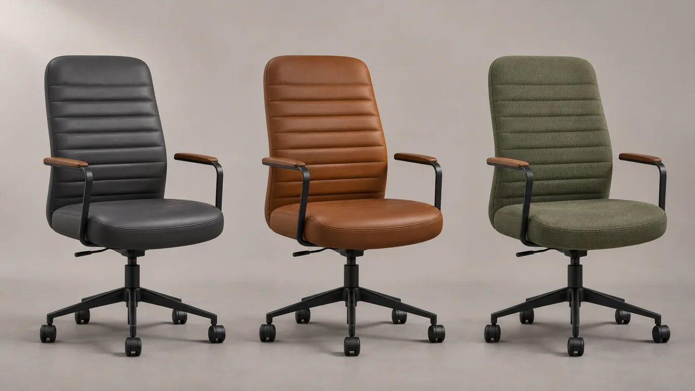
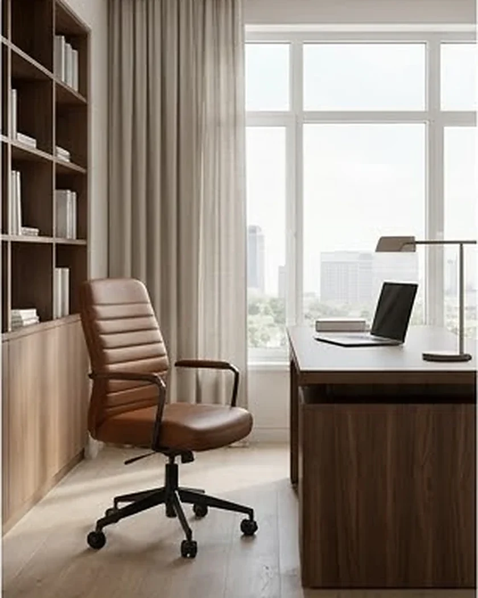

Серия Studio · Офис и переговорные
Axis
Рабочее кресло ручной работы
Рабочее кресло: тонкая спинка с горизонтальной прострочкой, сиденье с мягким передним краем, подлокотники из чёрной стали с накладками из ореха, пятилучевая опора на мягких роликах и газлифт.
Кожаот 35 000 ₽
Тканьот 26 000 ₽
Выбран цвет: Графитовая кожа
- Размеры (Ш × Г × В)
- 620 × 620 × 1000 мм
- Высота сиденья
- 500 мм
- Каркас
- Металл
- Обивка
- Графитовая кожа, Коньячная кожа, Оливковая ткань. Возможен свой материал
- Ткани
- Коллекции Noble, Fiori, Bohemia, Rio
- Гарантия
- 12 месяцев, ГОСТ 16371-2014
- Производство
- Фабрика полного цикла ГК «Фабрикант»
- Доставка
- По России и СНГ
Изготавливаем под ваш проект: точные размеры, обивку и стоимость фиксируем в персональном расчёте.


 Linea
Linea Forum
Forum